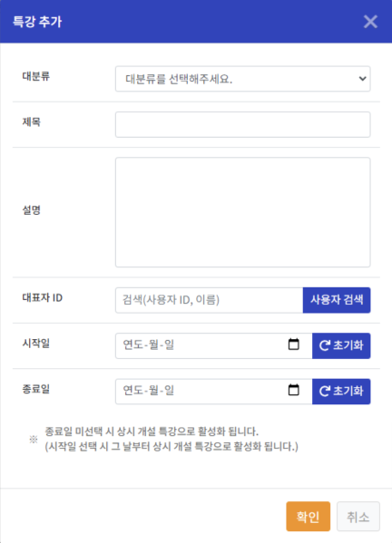
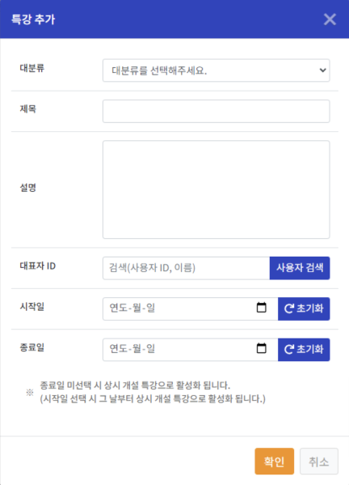
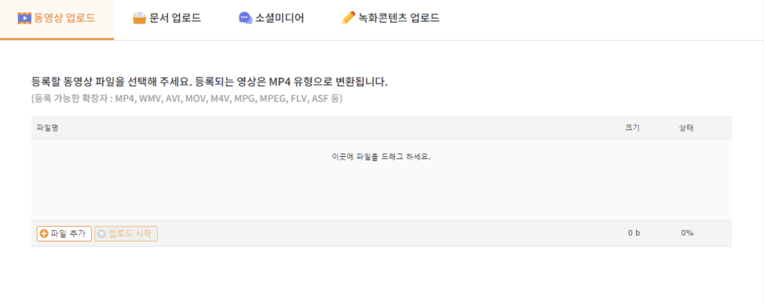

헬프데스크
콘텐츠관리시스템에 관하여 궁금하신 사항을 확인하실 수 있습니다.
- · 문의 : 033-260-6552 (교수학습개발원) · 이메일 : ctl@cnue.ac.kr
기관 코드란 각 사이트별 고유한 코드 값을 말합니다.
로그인 시 필요하며, 관리자에게 문의하여 알 수 있습니다.
* 기관에 따라 없는 경우도 있음
운영자 권한을 가진 분만 확인 가능하며
‘콘텐츠 현황 > 녹화 콘텐츠 진행 현황’ 메뉴에서 확인 가능합니다.
녹화 상태에 따라 녹화 / 업로드 / 등록 / LMS or Web / Vimeo 로 전송 상태를 실시간으로 확인 가능합니다.
녹화 상태에 따라 녹화 / 업로드 / 등록 / LMS or Web / Vimeo 로 전송 상태를 실시간으로 확인 가능합니다.
특강은 싸이트 운영자가 개설하며, 강의별 강의자를 지정하여 생성합니다.
특강에 추가되어 있는 강의자(참여자)만 녹화프로그램을 통해 해당 특강에 녹화가 가능합니다.
특강에 추가되어 있는 강의자(참여자)만 녹화프로그램을 통해 해당 특강에 녹화가 가능합니다.
 

CMS는 삭제된 콘텐츠는 휴지통으로 이관됩니다.
복원을 원하실 경우 운영자에게 문의 바랍니다.
복원을 원하실 경우 운영자에게 문의 바랍니다.
동영상 업로드는 스트리밍에 최적화 되지 않은 파일로 일반적인 프로그램으로 만든 동영상 파일이라 서버에서 트랜스코딩 작업이 진행됩니다.
녹화콘텐츠 업로드는 Laby 제품군으로 녹화한 콘텐츠를 말하며 스트리밍에 최적화되어 업로드 후 바로 서비스 가능합니다.

녹화콘텐츠 업로드는 Laby 제품군으로 녹화한 콘텐츠를 말하며 스트리밍에 최적화되어 업로드 후 바로 서비스 가능합니다.
처음 프로그램 설치 시 강의실 정보 및 녹화 장비 정보 설정이 제대로 되지 않아 나타나는 현상입니다.
설치 담당자 혹은 전산 담당자에게 요청하셔서 바르게 설정 바랍니다.
설치 담당자 혹은 전산 담당자에게 요청하셔서 바르게 설정 바랍니다.
1. 연결된 영상 소스를 확인합니다 보통 1채널은 PC 영상, 2채널은 카메라 영상이 입력됩니다.
예를 들어 카메라의 전원, 연결된 커텍터 등 영상 입력이 정상인지 확인합니다.
2. 입력 소스가 정상인데도 미리보기 화면이 나오지 않는다면 담당자에게 요청하셔서 바르게 설정하시기 바랍니다.
‘비로그인으로 사용하기’를 이용하여 녹화를 할 수 있습니다.

'비로그인으로 사용하기' 버튼을 클릭합니다.
제목을 입력 후 '강의시작' 버튼을 클릭하면 녹화가 진행됩니다.
녹화 종료 후 ‘녹화파일 다운로드’, ‘강의등록 및 업로드’ 중 선택해서
녹화파일을 다운로드하거나 CMS에 등록할 수 있습니다. (순차적으로 두가지를 진행해도 됩니다.)
녹화파일을 다운로드하거나 CMS에 등록할 수 있습니다. (순차적으로 두가지를 진행해도 됩니다.)

미리보기에서 소리가 켜져 있는지 확인해주세요.
(소리가 켜져있으면 스피커를 통해 나오는 소리가 다시 마이크로 들어가 소리가 계속 돌면서 웅웅거리게 됩니다.)
(소리가 켜져있으면 스피커를 통해 나오는 소리가 다시 마이크로 들어가 소리가 계속 돌면서 웅웅거리게 됩니다.)
1. '그래픽 설정' 선택
2. '찾아보기' 선택
3. C:￦lab241￦LabyRec￦LabyRec.exe 선택 후 추가
4. 'LectureMain' 선택 후 옵션에서 절전으로 선택
2. '찾아보기' 선택
3. C:￦lab241￦LabyRec￦LabyRec.exe 선택 후 추가
4. 'LectureMain' 선택 후 옵션에서 절전으로 선택
PC에 연결된 캡처 카드에 영상 소스 연결이 안되 있거나 카메카 출력을 확인합니다.
1. 노트북 카메라 사용 시 : 장치 관리자에 카메라 Device 연결 확인
2. 캡처 카드 사용 시 : PC에 연결된 캡처 카드 장애..분리 후 재연결 또는 교체 요망
2. 캡처 카드 사용 시 : PC에 연결된 캡처 카드 장애..분리 후 재연결 또는 교체 요망

1. CMS 시스템 사용 시 출력되는 메세지 이며 접속 정보가 다르거나 인터넷이 안되는 경우 표출 됩니다.
관리자에게 요청하여 설정합니다.
CMS 시스템을 이용안하셔도 녹화는 가능합니다.
1. 설정 메뉴를 선택하시면 영상 저장 경로를 확인할 수 있으며 변경도 가능합니다.
2. 녹화 후 “저장 폴더 열기”로 확인 가능합니다.
dxwebsetup.exe 파일을 설치 후 재실행 해주시면 됩니다.
다운로드 경로 :
다운로드 경로 :